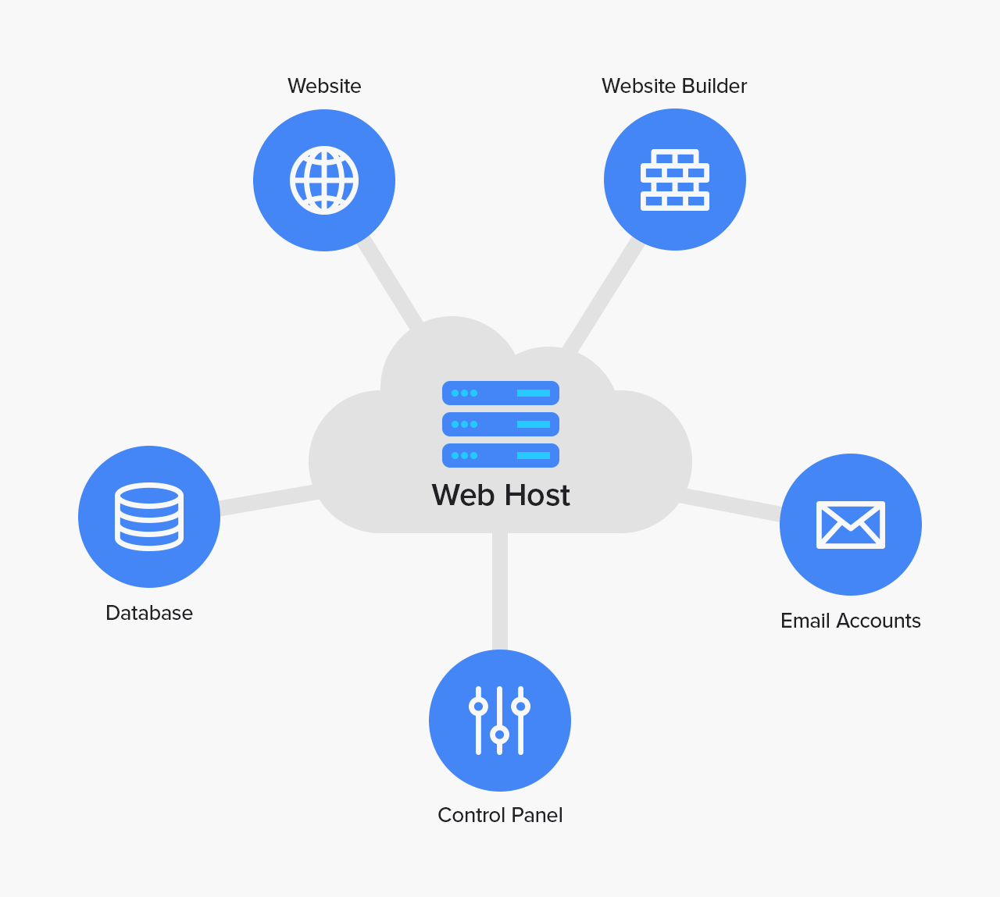

A web page or webpage is a document, commonly written in HTML, that is viewed in an Internet browser. There are websites we use every day. Some of the most popular websites are:
Nowadays, there are many ways to build your webpage. You can make one online using a website builder, which is a popular approach for people who want a website but don't really care to know the code behind it. The most pupular website builders include:
However, if you want to know what's really going on behind the scenes, control
every detail of your website, not be reliant on the predetermined layouts and
restrictions of a website builder, and be able to truly say that you
made a website, then you can choose to code one yourself.
How do you code a website, you ask? There are many languages that can be used and
libraries that can be added, but to make a simple and effective website, all you truly
need is two of the three languages of web development: HTML and CSS.
To release your webpage onto the world wide web, you need a domain to host your website. Hosting a website puts it onto servers, which allows anyone with a search engine and internet access to find and view the website that you created!

Most hosting services are paid, including many of those on website builders.
However, many website builders have free domains with limited features, and there are also
some free hosting services which will take the code for the website you have made and put it
onto the internet. However, if you have your HTML files, you can view the website on that specific
device by simply running the .html file, which will open the website in your default
browser.